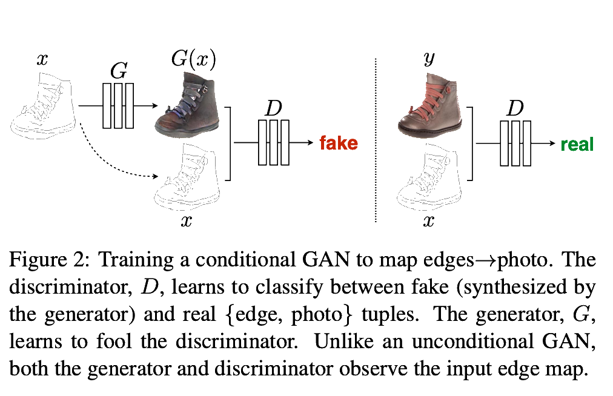

pix2pix [1] set to introduce a common framework for all image-to-image translation problems.
In this field, designing appropriate loss functions is a difficult problem: using $l_2$ Euclidean distance as loss function during training leads to blurry outputs. This is because Euclidean distance averages over plausible outputs.
Good use-case for adversarial training. This paper explores conditional generative adversarial networks (cGANs) - condition on input image.
Related Work
In this class of image-to-image problems we'd want to use structured loss functions - penalize joint configuration of output. There is a lot of previous work on structured loss functions: cGAN approach is different because they learn loss function . Other works train GANs unconditionally and rely on other terms - such as $l_2$ regression - to condition output on input.
Method
Information Flow
In conditional GANs generator learns mapping from observed image $x$ and random noise vector $z$ to output image $y$:
\begin{equation*}
G : \{x, z\} \rightarrow y
\end{equation*}
Discriminator observes input image $x$, as well as possible output $y$, and decides whether the output image was produced by the generator or not.

pix2pix training
Loss Function
\begin{equation*}
\mathcal{L}_{cGAN} = \mathbb{E}_{x,y} \log{D(x,y)} + \mathbb{E}_{x,z} \log{(1 - D(x, G(x,z))}
\end{equation*}
cf in unconditional GANs discriminator does not see input image $x$:
\begin{equation*}
\mathcal{L}_{GAN} = \mathbb{E}_{x,y} \log{D(y)} + \mathbb{E}_{x,z} \log{(1 - D(G(x,z))}
\end{equation*}
Can add an additional loss term for the generator - tasking it to produce images that not only fool the discriminator, but are also close to ground-truth:
\begin{equation*}
\mathcal{L}_{l_1} = \mathbb{E}_{x,y,z} || y - G(x,z) ||_1
\end{equation*}
where they used $l_1$ norm to discourage blurry images and obtain final loss $\mathcal{L} = \mathcal{L}_{l_1} + \lambda \mathcal{L}_{cGAN} $. $ \mathcal{L}_{l_1}$ terms enforces low-frequency correctness.
Generator Architecture
Use U-Net architecture introduced in unet[2]: encoder-decoder with skip connections across the information bottleneck: concatenate all channels at layer $i$ with those at layer $n-i$ if there are $n$ channels in total.
Discriminator Architecture - PatchGAN
Discriminator role is to enforce high-frequency correctness and crispness in output image - loss function has $ \mathcal{L}_{l_1}$ term for low frequency correctness - so it suffices to restrict our attention to the structure in local image patches.
Optimization and Inference
As in original GAN paper, train generator to maximize $\log D(x, G(x, z))$ rather than minimize $\log (1 - D(x, G(x, z)))$.
Divide the objective by 2 while optimizing $D$, which slows down the rate at which $D$ learns relative to $G$.
Apply dropout at test time
Apply batch normalization using the statistics of the test batch, rather than aggregated statistics of the training batch - instance normalization [3]
Stochasticity
Without noise $z$ the map from $x$ to $y$ would be deterministic. If $z$ is Gaussian noise input to generator, the network unfortunately learns to ignore it. Here they model the noise using dropout at both train and test time and only observe minor stochasticity in output.
Experiments
Decent results can often be obtained even on small datasets. For evaluation, they ran “real vs. fake”
perceptual studies on Amazon Mechanical Turk (AMT). They also ran pre-trained semantic classifiers on cityscape data-set: the intuition is that if the generated images
are realistic, classifiers trained on real images will be able
to classify the synthesized image correctly as well.
Ablation Study Loss Terms
$l_1$ term alone leads to reasonable but blurry results. The cGAN alone gives much sharper results but introduces visual artifacts on certain applications. $ l_1$ + GAN is also effective at creating realistic renderings that respect the input label maps.
Discriminator Patch Size
pixel GAN improves coloring but does not create sharper images
patches do well
full image GAN does worse than patches - hard to train
References
[1] Isola, P., Zhu, J.-Y., Zhou, T., and Efros, A. A. Image-to-image translation with conditional adversarial networks
[2] Ronneberger, O., Fischer, P., and Brox, T. U-net: Convolutional networks for biomedical imagesegmentation
[3] Ulyanov, D., Vedaldi, A., and Lempitsky, V. S. Instance normalization: The missing ingredient forfast stylization